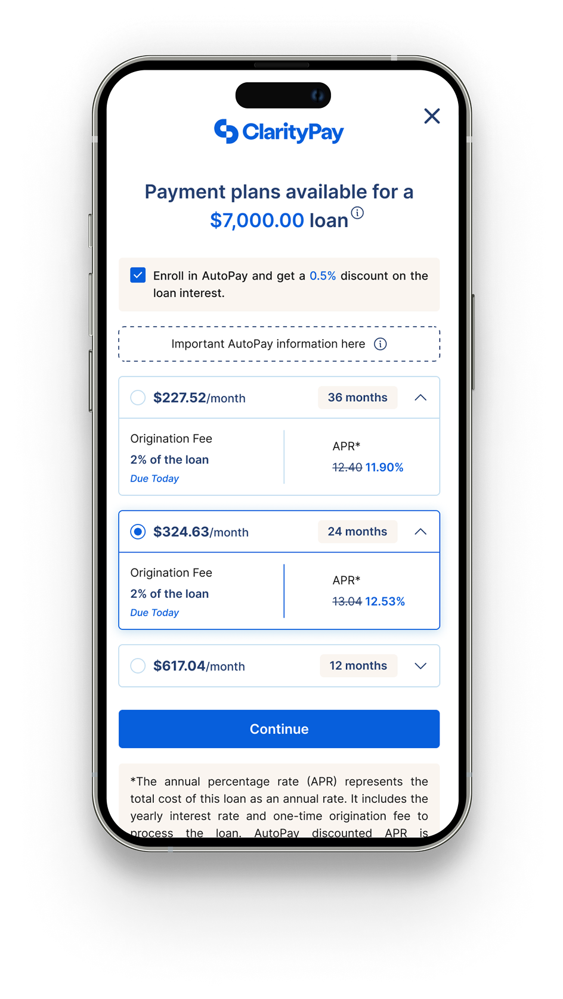

The lending platform that facilitated $1B+ in loan distribution.
Led UX strategy for Skeps' BNPL & POS lending platforms — SPOT Pay-Over-Time, the Merchant Portal, and the customer journey — with accessibility and compliance woven into every flow.
$1B+Loans distributed
$5M+Monthly GMV
$25M+Contracts signed